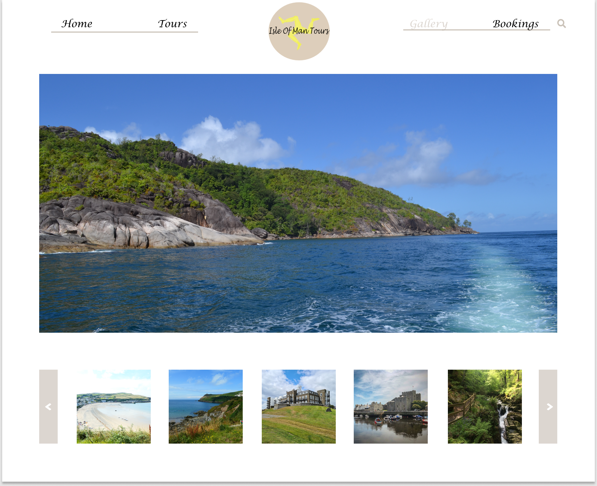

Desktop home page consist of a simple navigation bar and footer with the links to access each page. I also included a magnifying glass icon so the user could search for something specific. I created a logo using affinity designer for the website, which I placed at the top in a central position, so it stands out. I used a grid layout for the page, I downloaded four images from Unsplash for the home page. I tried to incorporate as many images as possible to show the beautiful landscapes to entice visitors to the island. I also included a chat button for users to start a chat if they have any questions about the tours on offer. I went for a simplistic layout and neutral colours to put more focus on the images. I also concentrated on user experience when I was designing my layout.

The tour page showcases one of the best tours on the website, I placed the image at the top of the page to grab the user’s attention and to convince them to book a sunset boat tour of the lighthouse. I resized the image so it would fit in the area at the top of the page, as I didn’t want it to take over a whole page. I displayed images of the other tours on offer I put them into a small collage. I used white text to label each tour which complimented each image nicely. In the middle of the page a created a search tour area for users to type in the tour they are interested in to get further information of it.


I used various images that I have taken and downloaded to create a simple gallery. I have also shown how it would look on a mobile. I create d a simple layout, I moved the logo which sat centrally previously to the side and created a hamburger menu to sit on the opposite side. The gallery shows what areas to visit when on holiday in the Isle of Man.